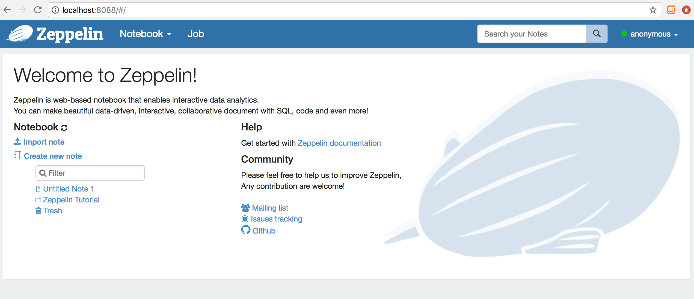
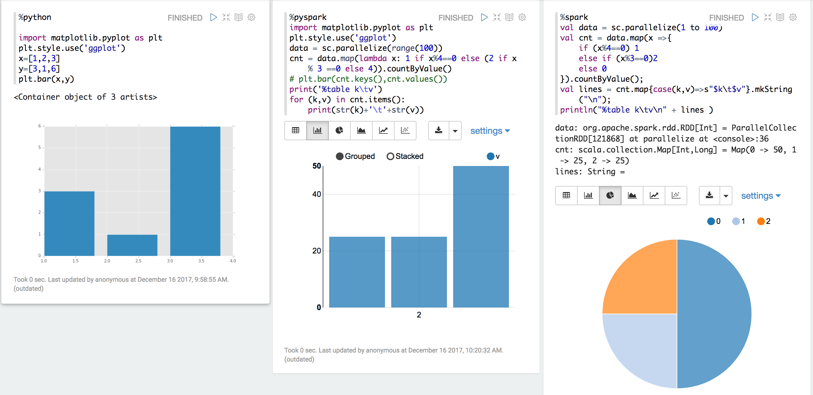
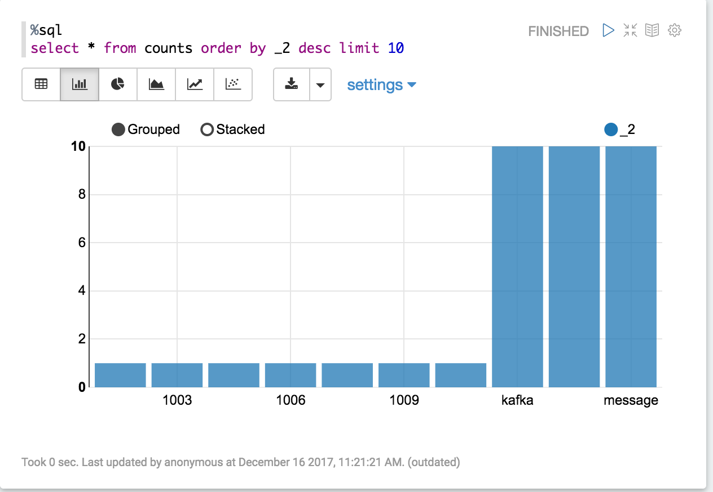

zeppelin 中运行 spark streaming kakfa 实时可视化
notebook方式运行spark程序是一种比较agile的方式，一方面可以体验像spark-shell那样repl的便捷，同时可以借助notebook的作图能力实现快速数据可视化，非常方便快速验证和demo。notebook有两种选择，一种是ipython notebook，主要针对pyspark；另一种是zeppelin，可以执行scala spark，pyspark以及其它执行引擎，包括hive等。比较而言，ipython notebook的可视化能力更强，zeppelin的功能更强。这里主要介绍基于zeppelin的方式。
spark standalone 部署
本地搭建端到端环境可以采用spark standalone部署方案。 从spark官方网站下载压缩包spark-2.2.1-bin-hadoop2.7.tgz，解压后执行
#start cluster
./sbin/start-all.sh
# check with spark shell
spark-shell --master spark://localhost:7077
# check the web UI
http://localhost:8080
kafka 演示部署
kafka在spark streaming应用场景中使用非常广泛，它有很多优秀的特性，横向扩展、持久化、有序性、API支持三种一致性语义等。 官方网站下载kafka_2.11-0.8.2.0.tar，并解压。 这里简单启动单节点：
#start zookeeper
./bin/zookeeper-server-start.sh config/zookeeper.properties
#start kafka borker
./bin/kafka-server-start.sh config/server.properties
zeppelin部署及示例
官方网站下载zeppelin-0.7.3-bin-all.tgz，解压。
为了避免端口冲突，先指定zeppelin的web端口：export ZEPPELIN_PORT=8088.
启动:
# start daemon
./bin/zeppelin-daemon.sh start
# check status
./bin/zeppelin-daemon.sh status
访问localhost:8088： 
创建一个notebook并尝试运行几个快速示例： 
python或者pyspark数据可视化可以使用matplotlib也可以直接将数据打印出来加上table头的注解%table {column name1}\t{column name2}\t...
spark-streaming + direct kafka
kafka0.10.0的API跟之前版本变化较大，参照http://spark.apache.org/docs/latest/streaming-kafka-0-10-integration.html，总结如下：
LocationStrategy
kafka partition跟spark executor之间对应关系
-LocationStrategies.PreferConsistent partition被均匀地对应到executor；
-PreferBrokers partition被分配给本地的executor，适合kafka跟spark集群部署在相同节点上的情况；
-PreferFixed 指定partition跟executor的映射关系
ConsumerStrategies
可以subscribe到过个topic
Offset保存
0.10之前的版本中我们需要自己在代码中保存offset，以防止spark程序异常退出，在重启自后能够从failure point开始重新处理数据。新版本的kafka consumer API自身支持了offset commit，周期地commit。示例代码中没有使用自动commit，因为从kafka中成功获取数据后就commit offset存在一些问题。数据成功被读取并不能保证数据被spark成功处理完。在之前的项目中我们的方案也是自己保存offset，例如保存在zookeeper中。
官网表示spark和kafka 0.10.0的集成目前依然是experimental状态。所以我们将基于0.8版本kafka开发。http://spark.apache.org/docs/latest/streaming-kafka-0-8-integration.html
spark-streaming + kafka + zeppelin
在zeppelin中执行streaming程序并将结果创建成temporary table，进而用于实时数据可视化
准备依赖
zeppelin有类似maven的依赖解决方法，paragraph如下：
%dep
z.reset()
z.load("org.apache.spark:spark-streaming-kafka-0-8_2.11:2.2.1")
//z.load("org.apache.kafka:kafka_2.11:0.8.2.0")
z.load("org.apache.kafka:kafka-clients:0.8.2.0")
单词统计代码
读取kafka数据，分词，统计单词数量，并将统计结果创建成temporary table counts。
%spark
import _root_.kafka.serializer.DefaultDecoder
import _root_.kafka.serializer.StringDecoder
import org.apache.spark.streaming.kafka.KafkaUtils
import org.apache.spark.storage.StorageLevel
import org.apache.spark.streaming._
// prevent INFO logging from pollution output
sc.setLogLevel("INFO")
// creating the StreamingContext with 5 seconds interval
val ssc = new StreamingContext(sc, Seconds(5))
val kafkaConf = Map(
"metadata.broker.list" -> "localhost:9092",
"zookeeper.connect" -> "localhost:2181",
"group.id" -> "kafka-streaming-example",
"zookeeper.connection.timeout.ms" -> "1000"
)
val lines = KafkaUtils.createStream[Array[Byte], String, DefaultDecoder, StringDecoder](
ssc,
kafkaConf,
Map("test" -> 1), // subscripe to topic and partition 1
StorageLevel.MEMORY_ONLY
)
val words = lines.flatMap{ case(x, y) => y.split(" ")}
import spark.implicits._
val w=words.map(x=> (x,1L)).reduceByKey(_+_)
w.foreachRDD(rdd => rdd.toDF.registerTempTable("counts"))
ssc.start()
数据展示
从上面的temporary table counts 中查询每小批量的数据中top 10 的单词值。
%sql
select * from counts order by _2 desc limit 10

端到端演示
为了快速搭建端到端的数据流分析，我们可以在上述各个步骤的基础上再创建一个restful service，有很多方式，例如jetty + jersery，或者直接使用nifi连接到kafka。